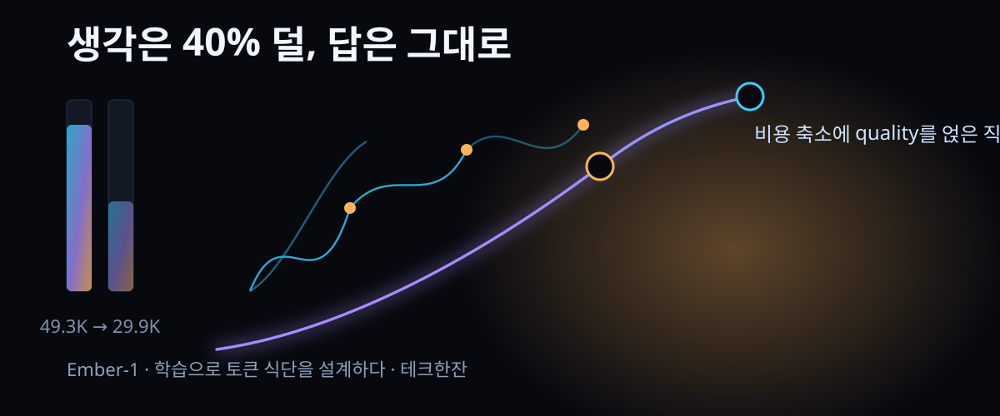

Ember-1 — "생각을 40% 줄였더니 답은 그대로" (HackerNews 494표)

결론부터: 비용을 줄이는 가장 값싼 방법은 모델에게 "적게 생각하라"고 시키는 게 아니라, 적게 생각하도록 훈련시키는 것이다.
Fireworks Research가 Kimi K3를 기반으로 추론 토큰을 40% 덜 쓰는 파생 모델 Ember-1을 내놨다. 공개 벤치마크 일곱 개와 실제 고객 트래픽 두 곳의 A/B 시험에서 품질은 유지되고 토큰만 줄었다는 게 제조측 설명이다.
HackerNews에는 2026년 9월 27일 올라와 2026-09-28 21:10 조회 기준 494표·댓글 39개가 달렸다. 댓글창의 관심사는 성능 숫자보다 "이건 원본의 확장인가, 별개 모델인가"라는 분류 문제였다.
30초 요약
| 항목 | 내용 |
|---|---|
| 무슨 일 | Fireworks Research가 Kimi K3 기반의 토큰 절감 특화 모델 Ember-1을 리서치 프리뷰로 공개 (2026-09-23 발표, 09-27 HN 등재) |
| 주장하는 수치 | K3 대비 토큰 40% 절감, 품질 동급. 제조측 내부 시험 표 기준 출력 49.3K→29.9K 토큰, 총 토큰 -39%, 점수 0.751→0.753 |
| 만든 방법 | 수학·코딩·도구 호출·대화 등 과제 모음에서 과제 피드백을 붙인 강화학습 계열 훈련. 훈련 실험 50회 이상, 평가 200회 이상 (제조측 발표) |
| 왜 지금 | 추론형 모델은 생성 토큰의 절반 이상을 답이 아닌 속 생각에 쓴다. 에이전트는 이전 회차를 다시 읽으므로 회차가 늘수록 비용이 겹으로 탄다 |
| 가격 기준 | 비교 계산은 Kimi K3 공개 API 가격(입력 미캐시 3달러/백만, 캐시 0.30달러/백만, 출력 15달러/백만) 기준. Ember-1 자체 단가는 발표문에 없음 |
| 상태 | Fireworks 서버리스에서 K3와 나란히 제공하는 리서치 프리뷰. 신규 모델에 2주 제한 공개 후 수요로 존속을 정하는 체계를 함께 소개 |
1. 무엇이 화제가 됐나
화제의 물체는 모델 하나이지만, 논점은 "토큰 어디에 돈이 새는가"다. 추론형 모델은 사용자가 보는 답보다 훨씬 긴 속 생각(chain-of-thought)을 함께 생성한다. 발표문의 표현을 빌리면 어떤 모델은 생성 토큰의 90%가 넘게 속 생각으로 나간다. 사용자는 100줄 중 5줄만 읽는데, 청구서는 100줄 기준으로 온다.
단일 호출은 아직 사치에 불과하다. 진짜 지출은 에이전트에서 터진다. 같은 대화 안에서 모델은 매 회차 지금까지의 속 생각을 다시 입력으로 삼는다. 회차가 N번 늘면 누적 컨텍스트는 대략 제곱으로 자라고, 초반의 장황한 생각이 뒤늦은 호출마다 반복 청구된다. 코딩 에이전트의 비용 곡선이 볼록한 이유가 여기 있다.
해결책처럼 보이는 첫 수 — 추론 강도(reasoning effort)를 낮추는 것 — 는 제조측이 먼저 기각한다. 강도를 내리면 정확도가 함께 무너진다. 그래서 남은 길은 하나였다: 생각의 양이 아니라 생각의 배합을 훈련으로 고치는 것.
Ember-1의 접근은 "속 생각을 잘라내는 모델"이 아니라 "불필요한 생각 루프를 타지 않도록 학습한 모델"이다. 자기 가설을 다시 살피고, 결과로 돌아가 원인을 좇고, 피드백에 응답하는 성찰은 남겨두고, 같은 자리에 맴도는 순환만 지워 나갔다. 수학·코딩·지시 준수·대화·검색·도구 호출·소프트웨어 엔지니어링을 섞은 과제 묶음에서 과제 수행 결과와 환경 피드백을 신호로 삼아, 회차가 길어지는 상황에서도 적응하도록 학습시켰다고 발표돼 있다.
2. 왜 심상치 않은가
① 가격표 싸움이 아니라 훈련으로 만드는 절감
지금까지의 비용 최적화는 라우팅과 프롬프트 다듬기 영역이었다. 싼 모델로 갈아타거나, 컨텍스트를 잘라서 넣거나, 프롬프트를 조이는 식. 이번 사례는 절감량을 훈련으로 만들어 낸다. 즉 절감률이 모델의 구조적 속성이 되어, 이후 모든 사용량에 자동으로 곱해진다.
② 벤치마크 표가 아니라 비용-성능 평면의 위치 싸움
발표문의 주요 도표는 점수 막대가 아니라 "하나의 과제를 끝내는 데 든 돈" 대비 통과율이다. 제조측 계산으로 Ember-1은 50표본을 넘는 모든 벤치마크에서 비용-성능 최전안에 앉았고, 같은 모델의 저강도 모드(K3 low)보다는 정확히 나았다 — 값이 덜 들고 점수가 높으므로. 내부 비교표의 몇 줄만 옮겨 적는다 (원문 표 수치).
| 벤치마크 | 표본 | K3 max(기본) | Ember-1 | 차이 |
|---|---|---|---|---|
| SWE-bench Verified | 500 | 93.2% | 92.2% | -1.0%p |
| Terminal Bench 2.1 | 89 | 80.9% | 82.0% | +1.1%p |
| DeepSWE 1.1 | 113 | 66.4% | 75.2% | +8.8%p |
| SWE-Interact | 75 | 21.3% | 20.0% | -1.3%p |
| τ-2 Bench Airline | 50 | 64% | 66% | +2.0%p |
같은 표에서 과제당 비용은 Terminal Bench -51.9%, DeepSWE -23.7% 식으로 함께 적혔다. 표본 75개인 SWE-Interact처럼 오차가 클 수 있는 항목은 참고 정도로 보는 게 맞다.
③ '개발자가 눈치채지 못한 교체'라는 검증 방식
제조측은 고객 공개 전에 자사 내부 코딩 트래픽을 Ember-1으로 돌렸다. 보고된 결과는 특기할 일이 없다는 것: 개발자들이 교체 사실을 모른 채 같은 작업을 했다는 것이다. "같은 답, 적은 토큰"을 표방하는 모델의 시험으로는 꽤 정직한 방식이다.
④ 오픈 가중치 생태계의 새로운 층위
주목할 흐름은 이게 특정 회사 전용 최적화가 아니라는 점이다. HN 댓글창에서는 "이런 절감 방법이 로컬 소형 모델에도 전이되느냐"는 질문이 달렸다. 오픈 모델 위에 파생 절감 모델을 얹는 작업이 가능해지면, 폐쇄 모델 진영 대비 오픈 생태계의 개선 속도 자체가 빨라질 수 있다는 논리도 함께 등장했다. 다만 학습된 가중치가 반드시 오픈으로 나오는 것은 아니므로, 이 논리는 아직 관찰이 아니라 추측이다.
3. 바로 써먹기 — 에이전트 비용 산수
Ember-1은 Fireworks 서버리스에서 호출 가능한 모델이라 당장 쓸 수는 있다. 다만 공개된 API 가격이 발표문에 없으므로, 여기서는 "내 에이전트의 생각 토큰 비율"을 재는 방법과 시뮬레이션 산수만 놓는다. 비율 측정부터가 모든 비용 논의의 0단계다.
| 단계 | 할 일 | 포인트 |
|---|---|---|
| 1. 계측 | 호출 응답의 usage에서 추론(reasoning) 토큰과 출력(output) 토큰을 분리 수집 | 합계가 아니라 비율이 핵심. 에이전트는 회차별 비율을 함께 남긴다 |
| 2. 상한 확인 | 회차 누적 컨텍스트가 입력 요금으로 얼마인지 10회차·20회차 지점에서 계산 | 초반 속 생각이 매 회차 재청구되는 구조라 곡선이 볼록하다 |
| 3. 저강도 비교 | 같은 과제 세트를 추론 강도 낮음/보통으로 돌려 정확도 하락폭 측정 | 하락이 크면 "적게 생각"이 아니라 "똑똑하게 적게"가 필요한 사례 |
| 4. 후보 실험 | 절감 특화 모델을 같은 과제 세트 A/B로 붙여 통과율·총비용을 나란히 기록 | 벤치마크 점수 표만 믿지 말 것 — 자기 트래픽이 유일한 1차 자료 |
| 5. 회차 설계 | 속 생각이 재사용되는 회차 경계를 줄이는 방향으로 에이전트 설계를 손질 | 모델 교체보다 먼저 싸게 먹는 처방: 회차 병합, 관찰 요약 |
시뮬레이션 하나. 과제당 출력이 발표문 내부 시험 기준으로 49.3K 토큰, 그중 71.3%가 속 생각이라고 하자. 출력 단가 15달러/백만을 적용하면 과제당 출력 비용은 대략 0.74달러. 속 생각 비중만 40% 줄이면 출력 비용은 0.61달러 안팎으로 내려간다. 한계에 몰리는 코딩 에이전트에서 0.1달러는 작지 않다 — 10만 과제를 돌리면 1만 달러다. 입력(재전송) 요금까지 합치면 감소폭은 이보다 더 커진다.
즉시 할 수 있는 일은 분명하다: 오늘부터 응답 usage의 추론/출력 분리를 로깅에 한 줄 추가하기. 이 비율이 60%를 넘는 에이전트라면 절감 후보가 이미 눈 앞에 있는 셈이다.
4. 해외 반응 쟁점 (달린 댓글 39개)
① "파레토 최전선이라는 말을 너무 남발하는 중". 상위 댓글은 기사에 그 말이 부족했다는 지적과 함께, 요즘 AI 글마다 파레토라는 단어가 나오는 현상 자체를 의심했다. 이에 대한 반론조 답글들은 "비용이 축의 하나로 내려온 순간 필연"이라는 쪽이었다. 어떤 쪽이든, 이번 주제를 읽는 공용 어휘가 바뀐 것은 맞다.
② 최대 실용 반론: 벤치마크가 절반을 숨긴다. "토큰을 줄이며 잃은 능력이 무엇인지가 궁금하다. 예전에 Go에 유독 강했던 모델이 요즘은 그럭저럭이 된 건 아닌지" 같은 댓글이 상위에 올랐다. 평균 점수는 보존돼도 특정 언어·특정 도메인에서 구멍이 생기는 검증은 발표문에 없다는 지적이다. 절감 모델의 실패는 평균이 아니라 꼬리에서 나타나는 법이다.
③ '파생 모델'의 분류 논쟁. 일각에서는 이런 절감 훈련이 오픈 모델을 빠르게 진화시켜 폐쇄 모델과의 거리를 줄일 거라는 기대를, 다른 일각에서는 학습으로 만든 파생 모델의 오픈 여부를 두고 "이건 정말 오픈 계열 이야기인가"라는 경계심이 달렸다. 라이선스·가중치 공개 범위가 논의의 전제라는 데는 이견이 없었다.
④ 기반 모델 가격에 대한 불만. "솔(Sol) 계열 가격 인하 이후 Kimi K3의 가성비 논리가 흔들린다. 우리 테스트에선 더 싸고 더 좋았다"는 실사용 보고가 달렸다. 플랫폼 내부 비교라 그대로 믿긴 어렵지만, 절을 잘 만드는 파생 모델의 등장이 기반 모델 가격 인하 압력으로 이어질 수 있다는 정황으로는 읽힌다.
⑤ 인프라 쪽을 보는 눈. "대형 랩 몇 곳 외에는 학습 배치를 직접 띄우기 어렵다. 생각이 떠오르면 바로 실험하고 쓴 만큼만 결제하는 구조 자체가 희소재"라는 댓글처럼, 모델보다 훈련 인프라 발표에 주목하는 시선도 있었다. 절감 실험 50회를 짧은 기간에 끝낸 배경으로 도구를 지목한 셈이다.
⑥ 빠른 모델에 대한 갈증. "단순 작업에 긴 생각은 낭비"라는 오래된 명제를 재확인한 댓글들이 붙었다. 가벼운 모델로 나누어 처리하는 수요가 이미 크고, Ember-1 계열의 접근은 그 수요를 같은 모델의 체중 조절로 풀려는 시도라는 정리도 나왔다.
5. 마시기 전 주의
- 핵심 수치가 전부 제조측 발표다. 벤치마크·A/B·내부 시험 모두 Fireworks가 진행했고, 제3자 재현은 이 글 작성 시점에 확인되지 않았다. 특히 "품질 동급"은 벤치마크 평균 기준이지 사용자의 업무 기준이 아니다.
- 리서치 프리뷰다. 프리뷰 모델은 가격이 아직 없거나 변경되거나 종료될 수 있다. 비용 계산에 모델명을 확정 변수로 넣지 말 것.
- 기반 모델이 Kimi K3라는 사실은 발표문의 주장이다. 학습 레시피는 비공개이므로 절감량이 타 모델로 전이된다고 볼 근거가 아직 없다.
- 절감 모델은 분포 바깥에서 먼저 깨진다. 도메인이 좁을수록 평균 점수 보존이 곧 실무 품질 보존이라는 보장은 없다 — 3번의 A/B는 옵션이 아니라 필수다.
- 토큰이 줄어도 회차 설계가 나쁘면 총비용은 그대로다. 모델 다이어트보다 에이전트 다이어트가 먼저인 팀이 많다.
바로 가기
샤오미 MiMo v2.6 — 오픈 가중치 추론 모델의 다음 수 — 이번 잔의 기반이 된 계열과 같은 층위에서 경쟁하는 모델 이야기. 파생 절감 모델의 가치는 기반 모델의 가격표를 흔든다.
OpenAI의 프롬프트 노이즈 실험 — 컨텍스트를 덜 태우는 법 — 모델 훈련 없이 비용을 줄이는 반대편 처방. 두 잔을 함께 마시면 비용 곡선의 두 축이 보인다.
AI 모델 시리즈 — 해외에서 먼저 검증된 모델 발표만 골라 한계까지.
도구 코너 — 로컬 개발 워크플로 체크리스트 (준비 중).